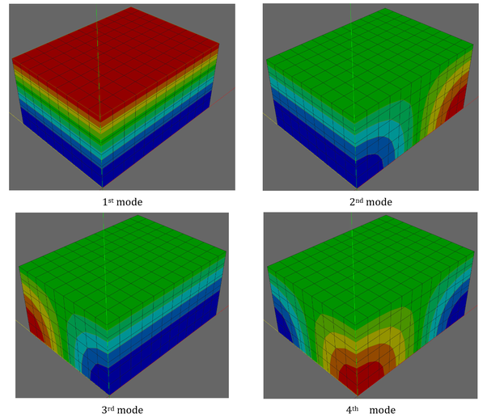
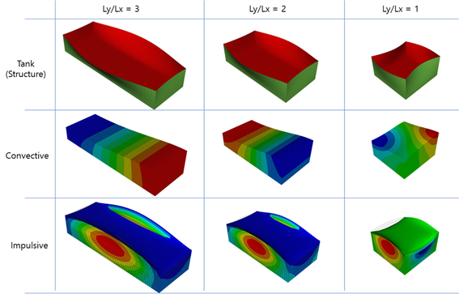
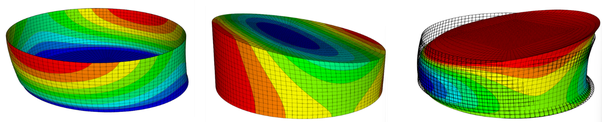
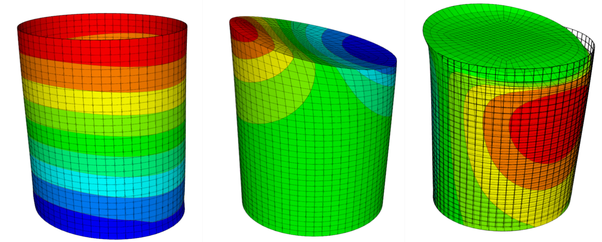
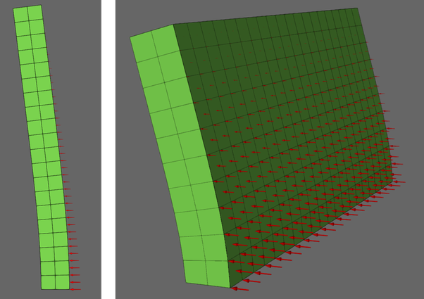
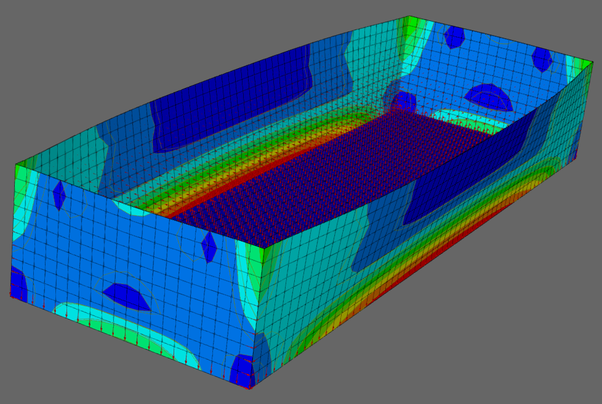
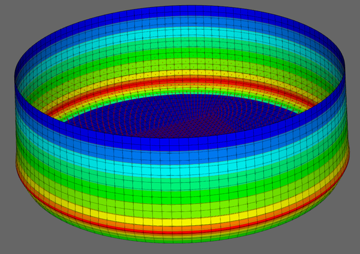

V.7 Acoustic Solid Element and HydroStaticPressure Loads
V.7.1 Impulsive Natural Frequencies in a Rigid Rectangular Tank
For a rigid rectangular tank containing a compressible fluid with length \(L_{x}\), width \(L_{y}\), and height \(H\), where the top surface is subject to a zero-pressure condition and all other surfaces are subject to a zero-flux condition, the following eigenvalues can be derived analytically.
where
\(c\) is the acoustic wave velocity, \(1480\,\mathrm{m/s}\) for the water in this example. The frequency is \(f=\omega/(2\pi)\).
\(\alpha_{l} = \frac{l\pi}{L_{x}},\ \beta_{m} = \frac{m\pi}{L_{y}},\gamma_{n} = \frac{(2n - 1)\pi}{2H}\)
\(l,m = 0,1,2,\ldots,\ \ n = 1,2,\ldots\)
For a rectangular water tank with dimensions of \(40\,\mathrm{m}\) (length), \(30\,\mathrm{m}\) (width), and \(20\,\mathrm{m}\) (height), the natural frequencies of five three-dimensional meshes were compared with the analytical solution. The numerical values in Tables V.7.1 through V.7.4 were recomputed with hfAnalyzer Release using the inputs listed below. Each column is sorted by increasing natural frequency. Mesh-dependent ordering can change for close or repeated eigenvalues, so values in the same row do not necessarily represent the same mode shape. Analytical mode indices and wave numbers follow the equations in each section.

Figure V.7.1 Contour Plot of Mode ShapesTable V.7.1 Natural Frequencies of 3D Rigid Rectangular Tank
| l | m | n | Analytic solution alpha |
Analytic solution beta |
Analytic solution gamma |
Analytic solution omega (rad/s) |
Analytic solution f (Hz) |
Numerical solution 8x6x4 |
Numerical solution 12x9x6 |
Numerical solution 16x12x8 |
Numerical solution 16x12x8-P6 |
Numerical solution 16x12x8-T4 |
|---|---|---|---|---|---|---|---|---|---|---|---|---|
| 0 | 0 | 1 | 0.000000 | 0.000000 | 0.078540 | 116.238928 | 18.5000 | 18.6191 | 18.5529 | 18.5297 | 18.5242 | 18.5295 |
| 1 | 0 | 1 | 0.078540 | 0.000000 | 0.078540 | 164.386669 | 26.1630 | 26.3314 | 26.2377 | 26.205 | 26.1785 | 26.3715 |
| 0 | 1 | 1 | 0.000000 | 0.104720 | 0.078540 | 193.731547 | 30.8333 | 31.131 | 30.9654 | 30.9076 | 30.9008 | 31.0321 |
| 1 | 1 | 1 | 0.078540 | 0.104720 | 0.078540 | 225.927866 | 35.9575 | 36.2741 | 36.098 | 36.0365 | 36.1389 | 36.3651 |
| 2 | 0 | 1 | 0.157080 | 0.000000 | 0.078540 | 259.918145 | 41.3673 | 42.2775 | 41.7704 | 41.5937 | 41.5089 | 42.0162 |
| 2 | 1 | 1 | 0.157080 | 0.104720 | 0.078540 | 302.618350 | 48.1632 | 49.0903 | 48.5738 | 48.3938 | 48.6972 | 49.1273 |
| 0 | 2 | 1 | 0.000000 | 0.209440 | 0.078540 | 331.048613 | 52.6880 | 54.8624 | 53.6503 | 53.228 | 53.287 | 53.4984 |
| 0 | 0 | 2 | 0.000000 | 0.000000 | 0.235619 | 348.716785 | 55.5000 | 57.9357 | 56.7676 | 56.3055 | 56.1504 | 56.2974 |
| 1 | 2 | 1 | 0.078540 | 0.209440 | 0.078540 | 350.862754 | 55.8415 | 58.7365 | 56.9352 | 56.3611 | 56.7324 | 56.9533 |
| 1 | 0 | 2 | 0.078540 | 0.000000 | 0.235619 | 367.579766 | 58.5021 | 61.617 | 59.8817 | 59.2761 | 59.0741 | 59.91 |
| 3 | 0 | 1 | 0.235619 | 0.000000 | 0.078540 | 367.579766 | 58.5021 | 61.617 | 59.8817 | 59.2761 | 59.0789 | 59.939 |
| 0 | 1 | 2 | 0.000000 | 0.104720 | 0.235619 | 381.606892 | 60.7346 | 63.8157 | 62.0988 | 61.4999 | 61.399 | 62.0894 |
| 1 | 1 | 2 | 0.078540 | 0.104720 | 0.235619 | 398.917671 | 63.4897 | 66.4765 | 64.811 | 64.2307 | 64.185 | 65.1938 |
| 3 | 1 | 1 | 0.235619 | 0.104720 | 0.078540 | 398.917671 | 63.4897 | 66.4765 | 64.811 | 64.2307 | 64.6278 | 65.3584 |
| 2 | 2 | 1 | 0.157080 | 0.209440 | 0.078540 | 404.523346 | 64.3819 | 66.7128 | 65.4134 | 64.9608 | 66.1404 | 66.5128 |
| 2 | 0 | 2 | 0.157080 | 0.000000 | 0.235619 | 419.105416 | 66.7027 | 69.9335 | 68.1335 | 67.5055 | 67.0949 | 69.9077 |
For a rectangular water tank with dimensions of \(40\,\mathrm{m}\) (width) and \(20\,\mathrm{m}\) (height), the natural frequencies of four two-dimensional meshes were compared with the analytical solution. The analytical solution always uses \(m = 0\).
Table V.7.2 Natural Frequencies of 2D Rigid Rectangular Tank
| l | m | n | Analytic solution alpha |
Analytic solution beta |
Analytic solution gamma |
Analytic solution omega (rad/s) |
Analytic solution f (Hz) |
Numerical solution 8x4 |
Numerical solution 12x6 |
Numerical solution 16x8 |
Numerical solution 16x8-T3 |
|---|---|---|---|---|---|---|---|---|---|---|---|
| 0 | 0 | 1 | 0.000000 | 0.000000 | 0.078540 | 116.238928 | 18.5000 | 18.6191 | 18.5529 | 18.5297 | 18.5296 |
| 1 | 0 | 1 | 0.078540 | 0.000000 | 0.078540 | 164.386669 | 26.1630 | 26.3314 | 26.2377 | 26.205 | 26.2881 |
| 2 | 0 | 1 | 0.157080 | 0.000000 | 0.078540 | 259.918145 | 41.3673 | 42.2775 | 41.7704 | 41.5937 | 41.8007 |
| 0 | 0 | 2 | 0.000000 | 0.000000 | 0.235619 | 348.716785 | 55.5000 | 58.7365 | 56.9352 | 56.3055 | 56.2984 |
| 1 | 0 | 2 | 0.078540 | 0.000000 | 0.235619 | 367.579766 | 58.5021 | 61.617 | 59.8817 | 59.2761 | 59.5851 |
| 3 | 0 | 1 | 0.235619 | 0.000000 | 0.078540 | 367.579766 | 58.5021 | 61.617 | 59.8817 | 59.2761 | 59.6025 |
| 2 | 0 | 2 | 0.157080 | 0.000000 | 0.235619 | 419.105416 | 66.7027 | 69.9335 | 68.1335 | 67.5055 | 68.6724 |
| 4 | 0 | 1 | 0.314159 | 0.000000 | 0.078540 | 479.265379 | 76.2775 | 83.066 | 79.6017 | 78.1423 | 78.4388 |
Input File
-
tank2d-8x4.inp : 2 dimensional rectangular tank, 8x4 elements, AC2D4
-
tank2d-12x6.inp : 2 dimensional rectangular tank, 12x6 elements, AC2D4
-
tank2d-16x8.inp : 2 dimensional rectangular tank, 16x8 elements, AC2D4
-
tank2d-16x8-T3.inp : 2 dimensional rectangular tank, 16x8*2 elements, AC2D3
-
tank3d-8x6x4.inp : 3 dimensional rectangular tank, 8x6x4 elements, AC3D8
-
tank3d-12x9x6.inp : 3 dimensional rectangular tank, 12x9x6 elements, AC3D8
-
tank3d-16x12x8.inp : 3 dimensional rectangular tank, 16*12*8 elements, AC3D8
-
tank3d-16x12x8-T4.inp : 3 dimensional rectangular tank, 16*12*8*6 elements, AC3D4
-
tank3d-16x12x8-P6.inp : 3 dimensional rectangular tank, 16*12*8*2 elements, AC3D6
V.7.2 Sloshing Natural Frequencies in a Rigid Rectangular Tank
For an incompressible fluid, the natural frequencies of free-surface sloshing in a rectangular tank can be derived analytically (Lamb, 1945).
where
Housner (1957) proposed the following approximate formula for the fundamental frequency.
Here, \(L\) is the length in the direction of excitation.
The 3D examples use \(L_x=19.6\,\mathrm{m}\), \(L_y=58.8\,\mathrm{m}\), \(H=11.2\,\mathrm{m}\), and \(g=9.81\,\mathrm{m/s^2}\). The 2D examples have a length of \(58.8\,\mathrm{m}\) and a water depth of \(11.2\,\mathrm{m}\), with \(k_m=m\pi/58.8\) in Table V.7.4. The zero-frequency row in each table is the spatially constant pressure mode.
Table V.7.3 Natural Frequencies of Sloshing Modes in 3D Rigid Rectangular Tank
| m | n | kmn (1/m) | f (Hz) | Numerical solution 10x30x6 |
Numerical solution 20x60x11 |
Numerical solution 20x60x11-P6 |
Numerical solution 20x60x11-T4 |
|---|---|---|---|---|---|---|---|
| 0 | 0 | 0.000000 | 0.000000 | 0 | 0 | 0 | 0 |
| 0 | 1 | 0.053428 | 0.084350 | 0.0844163 | 0.0843683 | 0.0843676 | 0.0843723 |
| 0 | 2 | 0.106857 | 0.148694 | 0.149068 | 0.148796 | 0.148783 | 0.148874 |
| 0 | 3 | 0.160285 | 0.194141 | 0.195056 | 0.19439 | 0.194329 | 0.194702 |
| 1 | 0 | 0.160285 | 0.194141 | 0.195056 | 0.19439 | 0.194343 | 0.195071 |
| 1 | 1 | 0.168956 | 0.200296 | 0.201226 | 0.200551 | 0.200536 | 0.201349 |
| 1 | 2 | 0.192639 | 0.215885 | 0.216947 | 0.216181 | 0.216238 | 0.217327 |
| 0 | 4 | 0.213714 | 0.228534 | 0.230264 | 0.229004 | 0.228874 | 0.229771 |
| 1 | 3 | 0.226678 | 0.235858 | 0.237313 | 0.236266 | 0.236372 | 0.237929 |
| 0 | 5 | 0.267142 | 0.256999 | 0.259196 | 0.257612 | 0.257536 | 0.258952 |
| 1 | 4 | 0.267142 | 0.256999 | 0.259909 | 0.257787 | 0.257734 | 0.260181 |
| 1 | 5 | 0.311539 | 0.277975 | 0.281321 | 0.278901 | 0.278968 | 0.281839 |
| 0 | 6 | 0.320571 | 0.282024 | 0.286557 | 0.283247 | 0.282861 | 0.285685 |
| 2 | 0 | 0.320571 | 0.282024 | 0.286557 | 0.283247 | 0.282862 | 0.287921 |
| 2 | 1 | 0.324993 | 0.283983 | 0.28854 | 0.285216 | 0.284879 | 0.290092 |
| 2 | 2 | 0.337911 | 0.289622 | 0.294289 | 0.290893 | 0.290692 | 0.296245 |
Table V.7.4 Natural Frequencies of Sloshing Modes in 2D Rigid Rectangular Tank
| m | km (1/m) | f (Hz) | Numerical solution 30x6 |
Numerical solution 60x11 |
Numerical solution 60x11-T3 |
|---|---|---|---|---|---|
| 0 | 0.000000 | 0.000000 | 0 | 0 | 0 |
| 1 | 0.053428 | 0.084350 | 0.084455 | 0.0843779 | 0.084382 |
| 2 | 0.106857 | 0.148694 | 0.149342 | 0.148864 | 0.148943 |
| 3 | 0.160285 | 0.194141 | 0.19587 | 0.194591 | 0.194922 |
| 4 | 0.213714 | 0.228534 | 0.231991 | 0.229425 | 0.230222 |
| 5 | 0.267142 | 0.256999 | 0.263001 | 0.258531 | 0.260005 |
| 6 | 0.320571 | 0.282024 | 0.291555 | 0.284429 | 0.286802 |
| 7 | 0.373999 | 0.304783 | 0.318995 | 0.308322 | 0.311832 |
| 8 | 0.427428 | 0.325879 | 0.3461 | 0.330838 | 0.335744 |
| 9 | 0.480856 | 0.345663 | 0.373426 | 0.352354 | 0.358932 |
| 10 | 0.534284 | 0.364366 | 0.401445 | 0.373125 | 0.381669 |
| 11 | 0.587713 | 0.382152 | 0.430613 | 0.393341 | 0.404161 |
Input File
-
sloshing2d-30x6.inp : 2 dimensional rectangluar tank, 30*6 elements, AC2D4
-
sloshing2d-60x11.inp : 2 dimensional rectangluar tank, 60*11 elements, AC2D4
-
sloshing2d-60x11-T3.inp : 2 dimensional rectangluar tank, 60*11*2 elements, AC2D3
-
sloshing3d-10x30x6.inp : 3 dimensional rectangluar tank, 10*30*6 elements, AC3D8
-
sloshing3d-20x60x11.inp : 3 dimensional rectangluar tank, 20*60*11 elements, AC3D8
-
sloshing3d-20x60x11-T4.inp : 3 dimensional rectangluar tank, 20*60*11*6 elements, AC3D4
-
sloshing3d-20x60x11-P6.inp : 3 dimensional rectangluar tank, 20*60*11*6 elements, AC3D6
V.7.3 Rectangular Liquid Storage Tank Analysis
Natural frequencies were calculated for rectangular tanks with different aspect ratios, where the liquid dimensions are \(L_x\), \(L_y\), and \(H\). The dimensions and material properties are summarized below.
Table V.7.5 Dimensions and Material Properties of Rectangular Tanks
| Ly/Lx = 3 | Ly/Lx = 2 | Ly/Lx = 1 | |
|---|---|---|---|
| Liquid length, Lx | 20 m | 20 m | 20 m |
| Liquid length, Ly | 60 m | 40 m | 20 m |
| Depth, H | 10 m | 10 m | 10 m |
| Water density | 1,000 kg/m3 | 1,000 kg/m3 | 1,000 kg/m3 |
| Wall height, Hw | 10 m | 10 m | 10 m |
| Young's modulus, E | 20.776 GPa | 20.776 GPa | 20.776 GPa |
| Wall thickness, tw | 1 m | 1 m | 1 m |
| Poisson's ratio | 0.17 | 0.17 | 0.17 |
| Wall density | 2,300 kg/m3 | 2,300 kg/m3 | 2,300 kg/m3 |
The following table shows the convective and impulsive frequency results.
Table V.7.6 Fundamental Frequencies of Rectangular Tanks (Hz)
| Ly/Lx = 3 FEM |
Ly/Lx = 3 Reference |
Ly/Lx = 2 FEM |
Ly/Lx = 2 Reference |
Ly/Lx = 1 FEM |
Ly/Lx = 1 Reference |
|
|---|---|---|---|---|---|---|
| Tank only | 5.329 | - | 5.918 | - | 9.221 | - |
| Water only (Convective) | 0.07908 | 0.07907 (Lamb, 1945) | 0.1132 | 0.1131 (Lamb, 1945) | 0.1895 | 0.1892 (Lamb, 1945) |
| FSI (Convective) | 0.07904 | - | 0.1131 | - | 0.1894 | - |
| FSI (Impulsive) | 3.803 | - | 4.234 | - | 6.676 | - |

Figure V.7.2 Modes of Rectangular TanksInput File
rect.inp
hfAnalyzer rect.inp -p "3-Fine" # Ly/Lx = 3
hfAnalyzer rect.inp -p "2-Fine" # Ly/Lx = 2
hfAnalyzer rect.inp -p "1-Fine" # Ly/Lx = 1
V.7.4 Cylindrical Liquid Storage Tank Analysis
Eigenvalue analyses were performed for the Broad Tank and Tall Tank presented by Haroun and Housner (1981). Both the rigid condition (fluid only) and the flexible condition (fluid-structure interaction system) were considered.
Table V.7.7 Dimensions and Material Properties of Cylindrical Tanks
| Tall Tank | Broad Tank | |
|---|---|---|
| Radius, R | 7.32 m | 18.3 m |
| Water height, H | 21.96 m | 12.2 m |
| Wall height, Hs | 21.96 m | 12.2 m |
| Wall thickness, t | 2.54 cm | 2.54 cm |
| Water density | 1,000 kg/m3 | |
| Water bulk modulus, Kw | 2.1904E+9 N/m2 | |
| Wall density | 7,840 kg/m3 | |
| Wall Poisson's ratio | 0.3 | |
| Wall elasticity | 206.7 GPa |
Four analysis cases were calculated with coarse and fine meshes: tank only, water only for the convective component, FSI for the convective component, and FSI for the impulsive component. Cylindrical tanks have many local modes, so modes with an Effective Modal Mass Ratio of 0.01 or less were excluded.
Table V.7.8 Fundamental Frequencies of Cylindrical Tanks (Hz)
| Tall Tank FEM-Coarse Mesh |
Tall Tank FEM-Fine Mesh |
Tall Tank Reference |
Broad Tank FEM-Coarse Mesh |
Broad Tank FEM-Fine Mesh |
Broad Tank Reference |
|
|---|---|---|---|---|---|---|
| Tank only | 19.1747 | 19.1706 | - | 34.0506 | 34.0155 | - |
| Water only (Convective) | 0.250887 | 0.250416 | 0.2500 (Veletsos, 1984) | 0.145256 | 0.145158 | 0.1451 (Veletsos, 1984) |
| FSI (Convective) | 0.250762 | 0.250291 | - | 0.145196 | 0.145097 | - |
| FSI (Impulsive) | 5.32744 | 5.30438 | - | 6.20135 | 6.15999 | - |
The natural frequency of a convective mode (sloshing frequency) can be derived for a rigid tank with incompressible fluid. Veletsos (1984) derived the following analytic solution.
Here, \(\lambda_j\) is a root of \(\frac{dJ_1(x)}{dx} = 0\). The first three values are \(\lambda_1 = 1.8411837813406593\), \(\lambda_2 = 5.331442773525033\), and \(\lambda_3 = 8.536316366346286\). The solutions by Veletsos (1984) are listed as reference values in the table.
Housner (1957) proposed the following approximate equation for the fundamental frequency.

Figure V.7.3 Modes of the Broad Cylindrical Tank (Fine Mesh): tank-only, convective water-only, and impulsive FSI modes from left to right.
Figure V.7.4 Modes of the Tall Cylindrical Tank (Fine Mesh): tank-only, convective water-only, and impulsive FSI modes from left to right.Input File
cylinder.inp
hfAnalyzer cylinder.inp -p "B-Fine" # Broad tank (Fine Mesh)
hfAnalyzer cylinder.inp -p "B-Coarse" # Broad tank (Coarse Mesh)
hfAnalyzer cylinder.inp -p "T-Fine" # Tall tank (Fine Mesh)
hfAnalyzer cylinder.inp -p "T-Coarse" # Tall tank (Coarse Mesh)
V.7.5 HydroStaticPressure Verification
HydroStaticPressure is verified using the structural models made with 2D and 3D solid elements, as shown in the figure. The 2D example uses a CPS4 solid wall with width \(1\,\mathrm{m}\), height \(10\,\mathrm{m}\), and element size \(0.5\,\mathrm{m}\). The 3D example uses a C3D8 solid wall with thickness \(1\,\mathrm{m}\), loaded length \(10\,\mathrm{m}\) in the global \(Y\) direction, cantilever height \(5\,\mathrm{m}\) in the global \(Z\) direction, and element size \(0.5\,\mathrm{m}\). The 2D example constrains the root edge. The 3D example constrains the bottom face at \(Z=0\), so the model behaves as a global \(Z\)-direction cantilever. Both examples apply hydrostatic pressure to the positive \(X\) face. The 2D free surface is at \(Y=10\,\mathrm{m}\), the 3D free surface is at \(Z=5\,\mathrm{m}\), and the unit weight is \(\gamma=9810\).

Figure V.7.5 2D and 3D solid cantilever models for SurfaceDistributed hydrostatic pressure verification.The expected resultants are
As a second example, the rect.inp and cylinder.inp examples from the preceding section are modified so that hydrostatic pressure is applied instead of fluid. The following stress values are from the final frame of the hydrostatic reporting runs. Each entry summarizes the minimum and maximum values over the printed shell stress points of the selected bottom stress element. Stress values are in MPa.

Figure V.7.6 Rectangular tank model used for hydrostatic pressure reporting verification.
Figure V.7.7 Cylindrical tank model used for hydrostatic pressure reporting verification.Table V.7.9 Bottom Stress Results from HydroStaticPressure Reporting Examples
| Model | Parameter | Location | Element | S11,min | S11,max | S22,min | S22,max | max |S12| |
|---|---|---|---|---|---|---|---|---|
| Rectangular | 1-Fine | Long side center | 1000611 | -3.826 | 3.946 | -0.628 | 0.659 | 0.052 |
| Rectangular | 1-Fine | Short side center | 1000810 | -3.826 | 3.946 | -0.628 | 0.659 | 0.052 |
| Rectangular | 2-Fine | Long side center | 1001021 | -7.435 | 7.511 | -1.257 | 1.276 | 0.016 |
| Rectangular | 2-Fine | Short side center | 1001410 | -3.563 | 3.709 | -0.584 | 0.619 | 0.052 |
| Rectangular | 3-Fine | Long side center | 1001431 | -8.261 | 8.288 | -1.403 | 1.410 | 0.004 |
| Rectangular | 3-Fine | Short side center | 1002010 | -3.550 | 3.697 | -0.581 | 0.617 | 0.051 |
| Cylindrical | B-Fine | Bottom point | 1786 | -40.868 | 40.868 | -2.269 | 49.547 | 6.183 |
Input File
hydrostatic-surface2d-cantilever.inp: compares variablePressureandHydroStaticPressureon a 2D solid cantilever.hydrostatic-surface3d-cantilever.inp: compares variablePressureandHydroStaticPressureon a 3D solid cantilever.hydrostatic-rect.inp: prints selected displacement, reaction, and bottom stress results for the1-Fine,2-Fine, and3-Finerectangular tank parameters.hydrostatic-cylinder.inp: prints selected displacement, reaction, and bottom stress results for theB-Finecylindrical broad tank parameter.
hfAnalyzer hydrostatic-surface2d-cantilever.inp
hfAnalyzer hydrostatic-surface3d-cantilever.inp
hfAnalyzer hydrostatic-rect.inp -p "1-Fine"
hfAnalyzer hydrostatic-rect.inp -p "2-Fine"
hfAnalyzer hydrostatic-rect.inp -p "3-Fine"
hfAnalyzer hydrostatic-cylinder.inp -p "B-Fine"
References
-
Lamb, H. (1945). Hydrodynamics, 6th Edition, Dover Publications.
-
Veletsos, A. S. (1984). Seismic response and design of liquid storage tanks. Guidelines for the Seismic Design of Oil and Gas Pipeline Systems, ASCE.
-
Housner, G. W. (1957). Dynamic pressures on accelerated fluid containers. Bulletin of the Seismological Society of America, 47(1), 15-35.
-
Haroun, M. A., & Housner, G. W. (1981). Earthquake response of deformable liquid storage tanks. Journal of Applied Mechanics, 48(2), 411-418.
-
Haroun, M. A. (1983). Vibration studies and tests of liquid storage tanks. Earthquake Engineering & Structural Dynamics, 11(2), 179-206.
-
Lee, J. H., & Cho, J.-R. (2024). Simplified earthquake response analysis of rectangular liquid storage tanks considering fluid-structure interactions. Engineering Structures, 300, 117157.